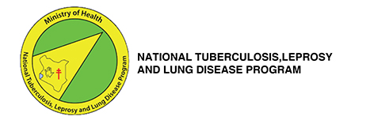
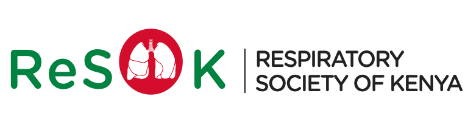
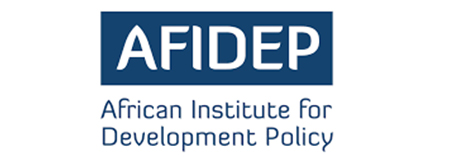
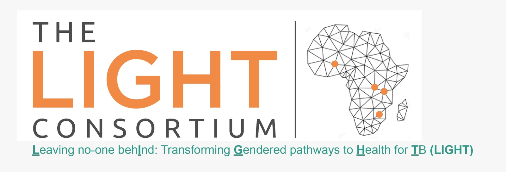
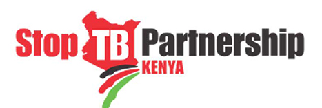
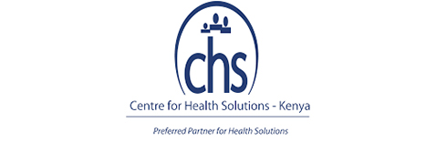
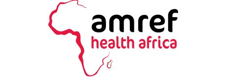
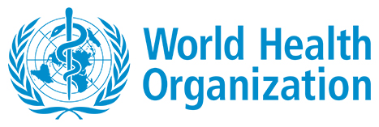

Our Partners

KISLHC
Ministry of Health

National Tuberculosis Leprosy and Lung Disease Program

Respiratory Society of Kenya

Africa Institute of Development Study

Light Consortium
Department of State

Stop TB Partnership
PEPFAR

Center for Health Solutions
KEMRI

AMREF

World Health Organization
Kenyatta National Hospital